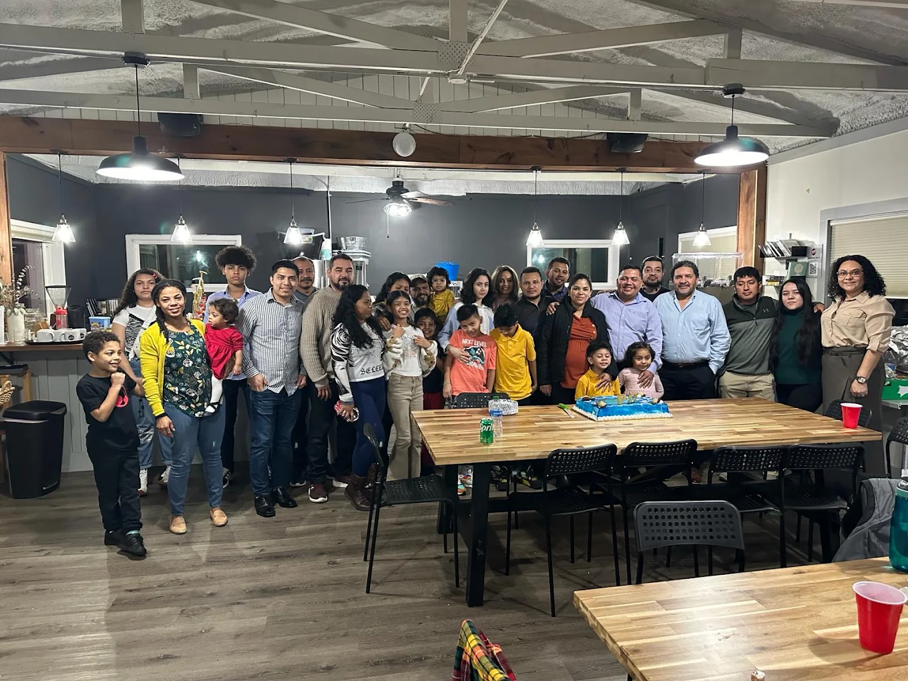
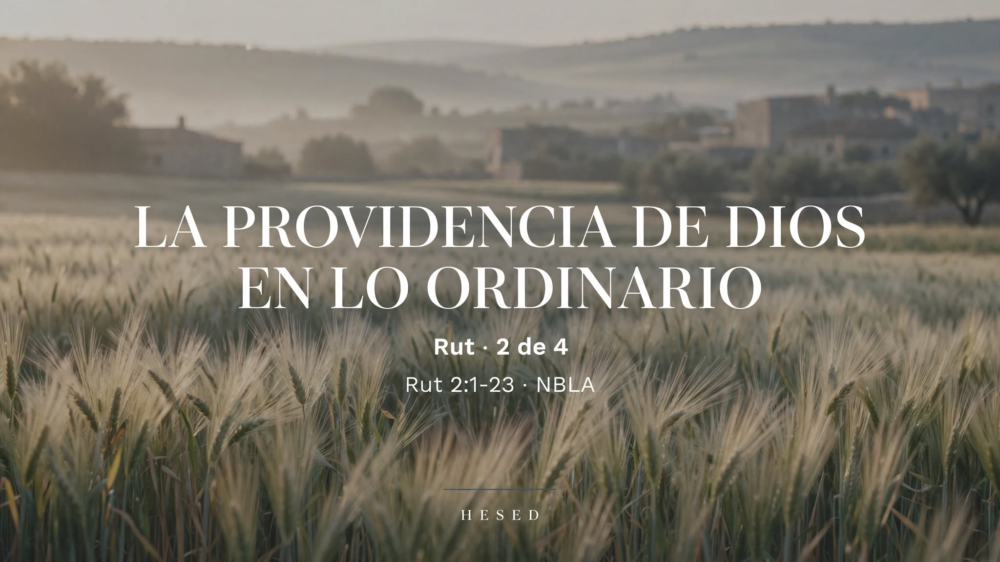

En Iglesia Amistad Atlanta creemos que el evangelio no es solo un mensaje que se predica — es una vida que se comparte. Te invitamos a caminar con nosotros.

La Palabra de Dios expuesta con claridad, domingo tras domingo. Escucha el mensaje más reciente o explora la serie completa.

Rut 2 — La providencia de Dios sigue obrando en los detalles ordinarios de la vida, aun cuando no la vemos.
Ver en YouTubeSomos una iglesia que cree que la Biblia es la Palabra inspirada de Dios y la única regla de fe y conducta para el creyente.
Creemos que la Biblia, en su totalidad, es la Palabra inspirada por Dios, sin error en sus escritos originales, y la autoridad final para la fe y la vida cristiana.
Creemos que la salvación es por gracia, mediante la fe en la obra terminada de Jesucristo en la cruz — no por obras, para que nadie se gloríe.
Creemos que la iglesia local es el cuerpo de Cristo en la tierra, llamada a adorar, a hacer discípulos y a servir a la comunidad que la rodea.
Creemos que cada creyente es enviado a vivir y compartir el evangelio — en su casa, en su trabajo, y hasta lo último de la tierra.
¿Quieres conocer más? Puedes leer nuestra declaración de fe completa.
Así es como vivimos la vida en comunidad, más allá del domingo.
Nos reunimos para orar por nuestra ciudad y nuestra congregación. 7:00 PM en el santuario principal.
Un domingo especial celebrando a quienes darán este paso de obediencia. Todos están invitados.
Un tiempo para compartir en familia como iglesia — comida, juegos y comunión. Después del servicio.
Tus ofrendas sostienen el ministerio de esta iglesia y alcanzan a nuestra comunidad con el evangelio. Gracias por tu fidelidad y generosidad.